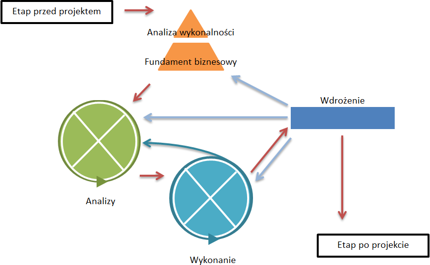

3.2 Dynamic Systems Development Method
Metoda tworzenia systemów dynamicznych (ang. Dynamic Systems Development Method - DSDM) została opracowana w Wielkiej Brytani w połowie lat 90. przez osoby o podejściu nie technicznym a biznesowym. Pierwsza wersja podręcznika DSDM została opublikowana w 1995 roku. Najnowsza wersja podręcznika została opublikowana w roku 2007 i jest to DSDM Atern. Skrót Atern pochodzi od nazwy Rybitwy Popielatej (ang. Arctic Tern), która uosabia wiele aspeptów charakterystycznych dla DSDM. Za aktualność metodyki odpowiada konsorcjum DSDM. Obecnie podejście DSDM jest najbardziej popularną zwinną metodyką zarządzania projektami w Wielkiej Brytani. [1 s.4]
DSDM jest to jedna z najbardziej ustrukturalizowanych metodyk zwinnych. Metoda DSDM została opracowana jako rozwinięcie do podejścia szybkiego tworzenia aplikacji (ang. Rapid Aplication Development – RAD), które w latach 90. było odpowiedzią na frustrację wynikającą z nieefektywności rozwiązań tradycyjnych. To i fakt, że metodyka ta została stworzona przez osoby zorientowane na korzyści biznesowe ma ogromne odzwierciedlenie w wartościach, jakimi powinny kierować się zespoły działające według DSDM. Są to: [2 s.20-23]
- Dostarczenie korzyści biznesowej jest głównym celem projektu.
- Dostarczenie produktu na czas jest jednym z głównych kryteriów sukcesu projektu w szczególności gdy opóźnienia mogą spowodować realną stratę biznesową.
- Współpraca w przeciwieństwie do pracy indywidualnej zwiększa zrozumienie, szybkość i poczucie odpowiedzialnści.
- Poziom jakości powinien zostać ustalony na początku projektu. Wszelkie działania zmierzają do osiągnięcia założonego poziomu nie przekraczając go.
- Przyrostowy charakter pracy pozwala na zebranie opini, które mogą od razu zostać wdrożone oraz może prowadzić do szybkiej realizacji korzyści biznesowej.
- Iteracyjny charakter pracy jest odpowiedzią na zmienne warunki otoczenia oraz niemożliwość stworzenia idealnego rozwiązania za pierwszym razem.
- Ciągła i klarowna komunikacja zwiększa efektywność grupy jak i poszczególnych jednostek.
- Kontrola na każdym etapie projektu jest kluczowa. Zespół musi być w stanie udowodnić, że projekt jest pod kontrolą.
Powyższe zasady członkowie zespołu powinni realizować na każdym kroku cyklu życia projektu. W DSDM na cykl życia projektu składają się trzy główne etapy: [2 s.30-31]
1) etap przed projektem – działania, które muszą zostać podjęte przed rozpoczęciem realizacji projektu,
2) Projekt właściwy, który uwzględnia 5 faz:
a) analiza wykonalności,
b) fundament biznesowy,
c) analizy,
d) wykonanie,
e) wdrożenie,
3) etap po projekcie – działania, które należy wykonać w momencie, w którym projekt został już zakończony.
Faza analizy wykonalności oraz stworzenie fundamentu biznesowego następują jednokrotnie kolejno po sobie. Głównym efektem tych dwóch faz jest zestaw zasad dla kolejnych faz, które mają charakter iteracyjny. Stąd wyraźnie rozdzielenie tych dwóch faz od pierwszej iteracji fazy analiz. W małych projektach te dwie fazy mogą zostać scalone w jedną, w wyniku której zespół uzyska informacje na temat zakresu projektu i sposobu jego wykonania w szczególności informacji odnośnie tego, kto wykona projekt, w jakim terminie i czy na pewno przy zastosowaniu DSDM. Na te dwie fazy niezależnie od tego czy realizowane łącznie czy rozdzielnie nie powinno się poświęcić wiecej niż kilka tygodni.
Rys. 3.2.1 Proces zarządzania projektem DSDM
Podczas fazy analiz zespół pracuje nad całością lub częścią problemów w efekcie czego zostaje opracowane rozwiązanie, które następnie w fazie wykonania zostanie dopracowane. Proces jak te fazy przechodzą jedna w drugą pozostaje w gestii zespołu, który dostosowuje go do specyfiki projektu i elementów do wypracowania.
Faza wdrożenia polega na implementacji produktu uzyskanego w formie przyrostów funkcjonalności.
W zależności od oceny uzyskanego produktu po fazie wdrożenia może nastąpić:
- etap po projektowy, jeśli wytworzony projekt spełnia wymagania i stanowi odpowiedź na biznesową potrzebę lub problem,
- analiza wykonalności, jeśli podczas realizacji projektu nastąpiła znaczna zmiana zakresu, która musiała zostać zignorowana ze względu na narzucone daty realizacji projektu,
- faza analiz, jeśli funkcjonalności, które zostały zaplanowane na następny przyrost mają zostać dodane,
- faza wdrożenia, jeśli produkt wymaga poprawek.
Aby powyższe fazy i zasady realizować sprawnie podręcznik DSDM wyróżnia role w podziale na zespół projektowy, zespół wykonawczy i role dodatkowe.
Role w ramach zespołu projektowego to: sponsor biznesowy, wizjoner, koordynator IT, koordynator projektu, lider zespołu, który stanowi łącznik pomiędzy zespołem projektowym a zespołem wykonawczym. W skład zespołu wykonaczego wchodzą poza liderem deweloperzy, analitycy biznesowi, testerzy, ambasadorzy biznesowi i ewentualnie doradca biznesowy. Role dodatkowe to osoba prowadząca warsztaty oraz coach metodyki DSDM Atern.
Przy tak znacznej liczbie określonych ról w przypadku małych projektów pojawia się pytanie o możliwość sprawowania kilku ról przez jedną osobę. Taka sytuacja jest jak najbardziej możliwa, na przykład rola koordynatora projektu i lidera jak najbardziej może być realizowana przez jedną osobę. Dodatkowo są role, które będą realizowane przez jedną osobę niezależnie od wielkości projektu. Taka sytuacja jest typowa dla roli sponsora biznesowego i wizjonera.
Rys. 3.2.2 Role w projekcie zarządzanym DSDM

Na powyższym wykresie kolorami zaznaczono role związane z biznesem (kolor pomarańczowy), zarządzaniem projektam (kolor niebieski) oraz role wykonawcze (kolor zielony).
W sprawnej realizacji etapów projektu oraz głównych założeń służą również zdefiniowane techniki. Techniki te mogą i są wykorzystywane nie tylko w projektach realizwanych omawianą metodą.
Jedną z najpopularniejszych technik stworzonych w ramach DSDM jest technika priorytetyzowania wymagań. W związku z tym, że podstawową wartością projektu DSDM jest zrealizowanie celu biznesowego o określonej jakości na czas, jedyną zmienną w ramach trójkąta projektu jaka pozostaje zespołowi do operowania, jest zakres funkcjonalności. Aby zapewnić realizację funkcjonalności o nawyższej wartości biznesowej dla każdej funkcjonalności określa się jej priorytet według poniższej skali: [1 s.4]
- funkcjonalność jest niezbędna (ang. must have),
- funkcjonalność powinna zostać wdrożona, jeśli jest to możliwe (ang. should have),
- funkcjonalność może zostać wdrożona, jeśli nie będzie to miało negatywnego wpływu na projekt (ang. could have),
- jeśli pozostanie czas, to można wdrożyć tę funkcjonalność (ang. would have).
Od pierwszych liter angielskich nazw wymienionych określeń priorytetów pochodzi nazwa tej techniki – MoSCoW.
DSDM kładzie również duży nacisk na takie techniki pracy jak warsztaty czy prototypowanie.
Techniką, którą stosuje DSDM w kwestii zarządzania czasem, jest technika sztywnych ram czasowych na konkretne etapy. Według DSDM czas, który zostanie poświęcony na tworzenie i testowanie oprogramowania powinien wynosić 60-80% całego czasu projektu.
[1] Lane D., Coffin R.: A Practical Guide to Seven Agile Methodologies. Part 2. Devx.com. 2006.
[2] DSDM Consortium: DSDM Atern Handbook. UK. DSDM Consortium. 2007.